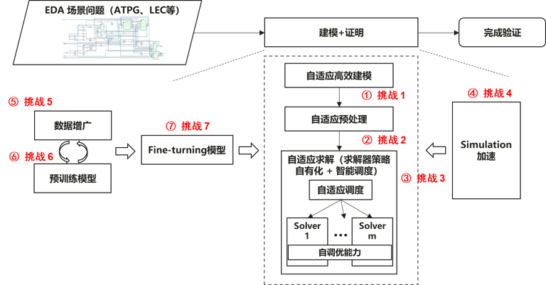
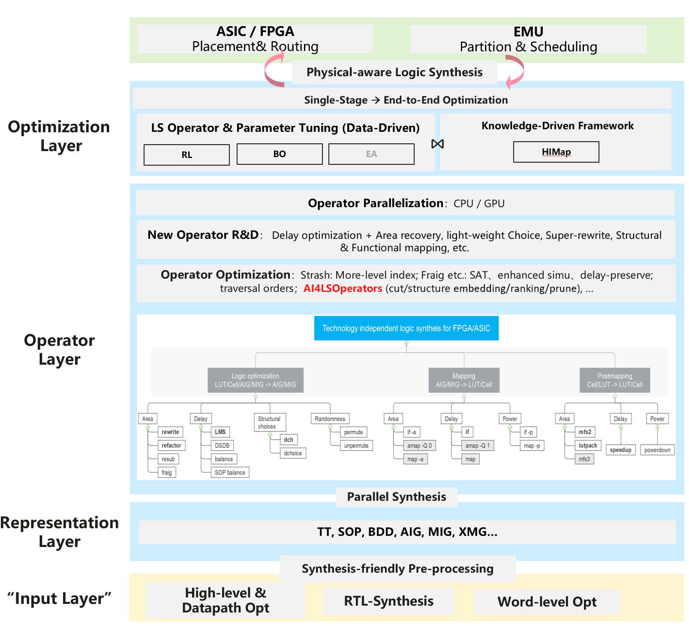
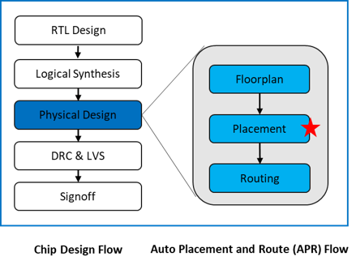
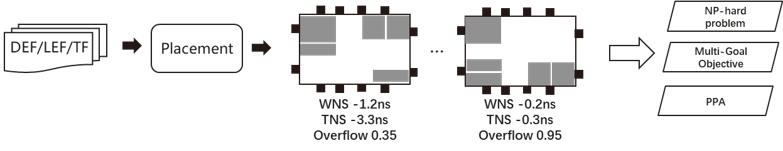
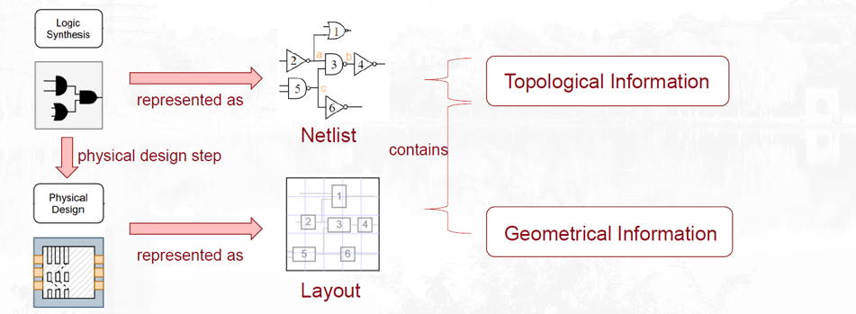

华为诺亚方舟实验室-AI4EDA团队
电子设计自动化（electronic design automation, EDA）是指利用计算机辅助设计（CAD）软件，来完成超大规模集成电路（VLSI）芯片的功能设计、综合、验证、物理设计（包括布局、布线、版图、设计规则检查等）等流程的设计方式。诺亚方舟实验室是华为公司负责AI算法的研究部门，EDA算法项目组紧跟基于AI的决策推理研究，解决当前EDA里空间探索、组合优化、图计算等相关问题。同时探索与应用数据驱动（Data-driven）的算法，构建核心技术竞争力。
新闻
测试与验证
在电子设计自动化(EDA)领域,测试与验证是确保芯片功能正确的关键步骤。它主要包含以下技术:
等价性检查:验证两个电路在所有输入条件下功能行为相同。这可以用于确保优化转换后的电路逻辑等价于原电路。
形式验证:使用形式方法证明设计满足给定规范。通常采用定理证明、模型检查等技术,可以验证更抽象的系统属性。
功能验证:在功能仿真器上对电路进行全面的功能验证,通过给入不同的测试向量并监测输出。
时序验证:验证电路在考虑时序效应情况下的正确性。需要建模组合逻辑、时序逻辑、时钟树等的相互作用。
功耗分析:估计电路的功率消耗情况。重要的优化目标。
设计规则检查:确保布图实现满足设计规则,如过渡时间、时钟传播等。
测试向量生成:自动产生用以激发电路缺陷的测试输入。
随着芯片复杂度提高,测试验证成为限制产能的瓶颈。提高验证效率和覆盖率是这个领域的技术发展方向。很多EDA应用都可以通过抽象成SAT问题后直接调用SAT求解器求解，包括模型检测（Model Checking）、逻辑综合（Logic Synthesis）、逻辑等价性验证（Logic Equivalence Checking）、自动测试向量生成（Automatic Test Pattern Generation）等。但是，高性能的SAT求解器往往不等价于实际EDA问题可以被高效解决，其中原因包括复杂约束场景下的高质量的编码（建模）方法、求解友好的化简手段、与数据匹配的求解器或者求解算法选择等。 目前，为了合理的利用专家知识和数据驱动，我们采用如下流程完成一个真实的EDA问题的测试或者验证。

1. 求解友好的自适应预求解技术：当前预求解的核心目标是以最小的代价将模型变小，但模型变小并不总带来求解性能上的收益。如何在数据驱动下找到求解优化的预求解方案，有效平衡化简与高层语义信息的知识提升求解性能。
2. 自适应的portfolio-based 求解方案：针对hard instance的证明问题时，当每个求解器都单独在给定时间内完成求解，如何结合不同的搜索特点，构成portfolio-based自适应证明范式，提升端到端证明性能。
3. 预训练模型 & 数据增广：合理利用大模型对知识的学习和泛化能力，支撑各种场景下的求解热启动；在当前数据质量和数量均远远无法到大模型的需求的情况下，如何高效的生成反映拓扑分布以及局部冲突核数据。
1. 求解友好的自适应预求解：单点工作集中在超参调节，未能考虑求解友好的方案，化简深度与证明效率关系不明确。
2. 自适应的portfolio-based求解方案：目前主流工作是如何高质量的实现learnt conflicts sharing以及优化过程信息的共享，2022-SAT competition的parallel track初步尝试利用bandit来实现高效并行框架，但尚不能解决工业级问题。
3. 大模型 & 数据增广：当前工作规模很小，主要集中在学习结构信息而无法覆盖求解特征，难以为策略优化提供支撑；开始有工作出现（DAC best paper），尚不能处理实际工业级问题。
逻辑综合
逻辑综合是一种过程,通过该过程将对期望电路行为的抽象规范(通常在寄存器传输级别(RTL))转化为关于逻辑门的设计实现,这通常是由一个称为综合工具的计算机程序完成的。这一过程的常见例子包括从硬件描述语言(包括VHDL和Verilog)指定的设计的综合。一些综合工具为可编程逻辑器件(如PLA或FPGA)生成比特流,而其他的则针对ASIC的创建。逻辑综合使设计人员能够在高层次上指定所需的功能,而无需关注底层的gates级实现细节。它大大简化了数字电路设计流程,被广泛应用于数字IC的设计中。
逻辑综合具有最大的修改电路或网表结构的自由度，这是优化性能、功率和面积(PPA)的关键所在。大多数综合算法都在不同抽象级别的图中工作，这些问题对于求解而言是 NP-hard的，因此需要许多经过精心设计的启发式方法来获得足够但不是最佳的解决方案。人工智能(AI)在物理设计、计算机视觉(CV)和自然语言处理(NLP)等领域取得了巨大的成功。如何进一步利用 AI推动逻辑综合与 AI以满足更高的 PPA或运行时间要求，这是一个有趣但具有挑战性的问题。在逻辑综合中使用 AI的一种方法是使用机器学习算法来学习现有综合结果中的模式，并将这些模式用于指导综合过程。另一种方法是使用强化学习来优化综合结果随时间的优化，使用结果反馈来改善 AI模型。 虽然在逻辑综合中使用 AI存在挑战，但潜在的好处是巨大的，持续的研究在这个领域有望导致新的和更有效的方法来优化电子电路。

1. 使用什么样的表示方式?
逻辑综合中常用的表示方式有: 布尔表达式、 Logic graph (AND-OR graph, AIG)、 流程图(Data Flow Graph)， 不同的表示方式有不同的优劣。例如布尔表达式直观,但优化复杂;图表示可以突出优化和映射的局部结构。
2. 如何针对目标技术进行逻辑优化?
逻辑优化需要考虑目标技术库的特点,常见优化手段包括: 共因式提取、布尔简化、 重构、重时间、 逻辑复制、逻辑合并、 多级逻辑合并、连续映射。 此外,可以应用代数重写、布尔满足性、图算法、启发式算法等进行逻辑优化。
1. 转换(Translation):将HDL转换成低级电路描述(网表)。
2. 优化(Optimization):在约束条件下最小化或优化逻辑。
3. 映射(Mapping):将逻辑优化地映射到特定的实际逻辑门上。
黑盒优化
EDA 工具利用黑盒优化的工作流程，即设计空间探索 (DSE)的整个过程由预测性机器学习模型和机器学习理论支持的采样策略来指导。 依托华为诺亚自研黑盒优化平台HEBO，我们提出了融合领域知识的黑盒优化技术NAILS。
随着芯片制程日益演进，芯片微架构设计空间呈现几何增长导致设计空间爆炸的问题，因此无法通过穷举的方式确定最优的架构空间参数配置。 传统的最优参数选取依靠架构师选取有潜力的参数配置进行仿真确定，但随着设计空间的膨胀，专家经验的局限性导致人工结果距最优配置差距越来越大。 现有自动化最优参数寻优方案主要依赖黑盒优化算法（如贝叶斯优化，MCTS 等），但超高维的设计空间（> 500）寻优仍未很好解决，是当前主要挑战之一。

1. 搜索空间大：巨大的搜索空间导致无法通过穷举确定全局最优解，如何利用有限数据对搜索空间建模并高效判断潜力较高的搜索区域是核心问题；
2. 仿真耗时长：优化目标对于搜索算法是黑盒，因此只能通过仿真取得采样解的目标值。而复杂问题的仿真开销通常以小时计，所以如何利用有限采样点精准建模是另一项主要挑战。
1. 贝叶斯优化 (BO)：BO 框架下直接或间接提升超高维空间寻优性能的方法主要包括：1) 定义或学习原参数空间向低维空间的映射，将超高维空间转换为低维空间进行寻优 ；2) 增加参数对目标间关系的假设提升目标代理模型建模精度；3）利用前沿模型架构建模代理模型提升模型的泛化性；4）利用历史任务数据预训练代理模型，热启动寻优任务提升样本效率。
2. Monte Carlo tree search（MCTS）：今年来有工作将 MCTS 应用于搜索空间划分，然后在潜力较高的子区域上结合黑盒优化算法，实验发现相比现有黑盒优化有更好的高维寻优表现。
1. 寻优效率：提供高效的超高维空间 (> 500) 黑盒优化技术，包括但不限于代理模型建模精度提升，新样本采集策略改进等，10 倍提高超高维空间黑盒优化的寻优效率
2. 样本效率：因前述技术挑战部分提到的仿真耗时长的问题，所提方案尽量避免大量仿真估计，能够利用较少次数（建议 < 500 ）的仿真，采集真实目标值高效搜索到全局最优解
布局布线
布局布线主要是确定逻辑单元的位置（布局），确定逻辑单元之间的连线（布线），是FPGA支持软件设计中的关键一步，为NP问题。
芯片布局起着承上（逻辑综合）启下（布线）的作用，是现代超大规模集成电路设计物理设计流程中的一步，显著影响芯片设计的迭代周期。由于芯片布局被认为是NP-Complete的问题，因此如何快速生成高质量的芯片布局是布局问题的重要挑战。
芯片布局问题可以描述为给定标准单元和宏单元的大小和连接关系，给出约束(如没有元件重叠)和优化目标(时序，拥塞，功耗，面积等)，基于特定策略确定每个单元的位置。

1. 基础模型：如何构建及设计有效的监督信号，针对多目标权衡对Macro进行布局规划，提升设计效率，以达到最佳的PPA指标，及通过泛化，使得大模型适用于不同的芯片布局。
2. 半定制全定制电路：对于计算单元大量复制以支持高吞吐量的特制电路，如何设计及构建有效的监督信号，针对多目标权衡进行布局规划。
3. 预测模型：如何构建高精度高效率预测模型，准确预测百万门级电路/约束级别问题的芯片布局布线PPA结果。
4. 算法左移：如何设计及构建有效的监督信号，利用预测的结果或者物理规律的结果进行芯片设计流程左移，提升芯片PPA、物理设计效率。
1. 基础模型：采用监督或离线强化学习方式优化基础模型，但受限于EDA数据样本较少，致使模型性能泛化性有限。
2. 半定制全定制电路：当前科研界尚未形成系统的关于大量复用模块的芯片布局优化考虑；
3. 预测模型：集中在时序、拥塞、线长等指标单独预测，通过电路网表表征进行前端预测，但由于缺失后期具体布线考虑，致使模型预测有效性不足；
4. 算法左移：基于预测模型结果或者规则定义中间指标接近最终目标结果，但实际相关性仍有限；
1. 基础模型：有效表征电路网表、元件属性与布局位置信息，通过数据增广与生成等手段提高模型泛化性表现。
2. 半定制全定制电路：对复用模块进行有效pattern识别，设计复用机制，提高模块复用效率。
3. 预测模型：针对工业级实现流程，设计高效的预测模型架构和训练方案，提高前端预测过程与最终指标相关性，作用于自动化布局方法，提升模块设计质量。
4. 算法左移：在提升中间指标与最终指标相关性的同时，设计多目标均衡机制，稳定芯片PPA的提升，提升芯片PPA性能5%+根据给定的优化目标。
电路表征学习
电路图表征学习是一个应用图神经网络(GNN)的重要领域。 在Very-large-scale integration (VLSI)芯片设计中,电路通常以网表(netlist)的形式给出,它记录了所有元件(如逻辑门、触发器等)之间的连线关系。对这样的大规模电路网表进行建模可以指导逻辑综合与物理设计,并预测电路性能。 近年来,利用图神经网络对电路结构进行表征学习成为一个活跃的研究方向。相比传统方法,GNN可以更好地建模电路的连通性和组成关系,并端到端地学习电路拓扑与功能之间的关联。一般来说,网表中的元件和连线可表示为图的节点和边,节点特征编码元件类型,边特征编码连线关系。然后使用GNN学习电路的嵌入表示,并用于下游预测任务,如延迟、功率、面积的预测。 这种图表征学习方法不依赖人工特征工程,可以从数据中自动提取电路结构知识。同时还可利用预训练技术,使模型对不同的电路拓扑表现出更好的泛化能力。总体而言,电路图表征学习是一个值得探索的方向,可以更深入地理解和优化VLSI芯片设计流程。

将电路转换为网表:包含所有电路元件的互连信息
单元:提供布尔逻辑功能的晶体管和互连组
将所有电路元件放置在电路板上,并通过线路连接
允许从过去的设计中积累知识应用于新设计(基于模型的学习任务)
一些由糟糕逻辑结构引起的问题不能通过布局来修复
大规模电路 - 逻辑合成或布局迭代在计算上非常昂贵
1. 当面对大规模图时,训练效率受到限制。在推荐系统中,用户-物品交互的双分图可能会达到约1000万个节点。在EDA中的网表表示中,网表、AIG图也可能达到约1000万个节点。
2. 由于潜在的分布变化,模型难以泛化到未见过的图上。在实际应用中,需要对不同图之间的嵌入进行对齐/迁移/预训练。
3. 底层的结构信息可能存在噪音或只被部分观察到。学习过程高度依赖于观察到的结构。如果存在虚假或噪声的连接,或者丢失了关系,都会使学习受到偏差。
4. 下游任务的标签稀疏或弱。构建有效的自监督学习信号可以帮助学习过程。
针对GNN落地中的难点，我们提出以下诉求：
大图训练效率, 大图预训练模型
图表征训练泛化
在图神经网络中合适地引入域知识作为归纳偏置
大模型
1. 大模型技术在芯片设计领域的应用有希望大大提升设计效率和代码质量，同时降低设计的专业门槛。
2. 随着大模型的发展，整合AI技术的EDA软件有望逐渐成为整个芯片设计行业的基础框架，为芯片设计带来更高的性价比
3. 大模型相较于之前的语言模型，在理解复杂语境、生成更精准文本、捕获深层语义关系等方面有显著提升，能够更好地适应多样化和高难度的任务需求
4. 新的微调技术改变原有技术格局，降低训练成本甚至数据成本，提升AI驱动的技术底座的可能
1. 大模型适合做交互式任务，提升工具链效率，例如debug和测试向量生成，促进良率爬坡，工具自动调优等
2. 由于模型本身无法消除幻觉，人工的介入和优化还是必不可少的，未来更倾向于人工智能与人的长期协作模式
3. 大模型技术的应用需要相当大的数据整理、人工标注工作和计算资源的投入
1. 大模型在符号计算“推理”方面的能力，需要从机制上进一步研究探索
2. 需要进一步设计高效的微调技术，尤其考虑多任务下的推理能力
论文发表
近两年的论文列表：